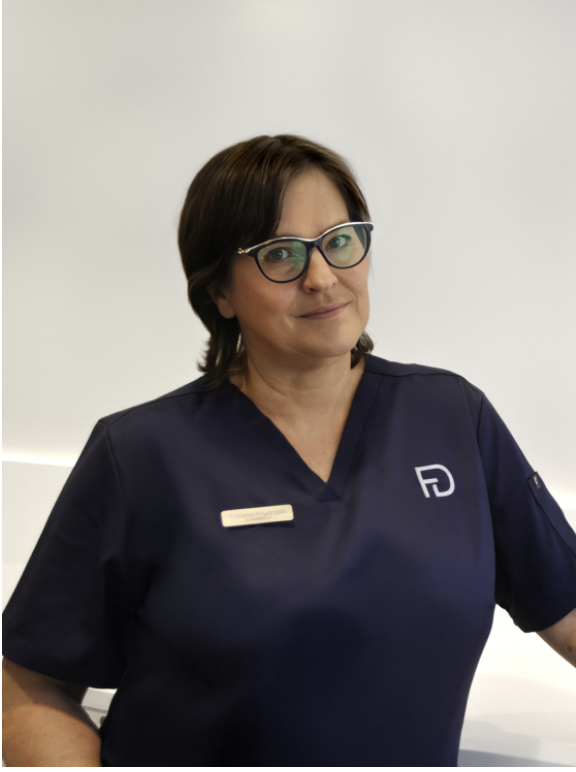
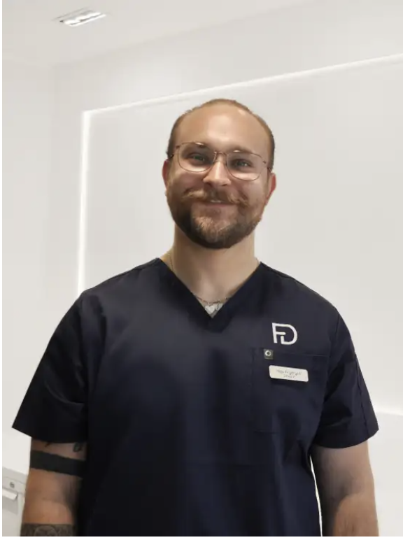

Verwurzelt im Schwarzwald. Seit 1925.
Zwischen Tannenwäldern, klarer Luft und der gewachsenen Gemeinschaft von Bonndorf begann 1925 eine zahnmedizinische Geschichte, die bis heute weitergeschrieben wird. FRYDENT ist mehr als eine Zahnarztpraxis: Wir sind Teil dieser Region. Teil ihrer Menschen. Teil ihrer Geschichte.
Unsere Historie
Mitten in Bonndorf entsteht eine der prägenden Zahnarztpraxen der Region. Der Grundstein für eine über 100-jährige Tradition ist gelegt.
Dr. Stritts Schwiegersohn tritt in die Praxis ein. Die Praxis bleibt in Familienhand — und wächst weiter mit der Region.
Zahnmedizin mit Herz und Präzision in dritter Generation. Die Praxis bleibt ein fester Bestandteil Bonndorfs.
Ein neues Kapitel beginnt — mit Respekt vor der Geschichte und dem Blick nach vorn. Die Praxis wird modernisiert, Strukturen erneuert, Werte bewahrt.

Zwei Generationen arbeiten nun Seite an Seite. Die Zukunft der Praxis bleibt familiär — und regional verwurzelt.

Über 100 Jahre Erfahrung. Ein Team mit außergewöhnlicher Kontinuität. Eine Praxis, die bleibt.
Wartezimmer — damals und heute
Damals: Holz, klare Linien, funktionales Design der 1970er Jahre. Schon damals ein Ort der Ruhe im Herzen Bonndorfs.
Heute: Helle Materialien, warme Farben, moderne Akzente — doch das Gefühl ist geblieben: ankommen, durchatmen, willkommen sein.
Praxislabor — damals und heute
Damals: Handarbeit, Präzision, Erfahrung — jedes Werkstück ein Unikat.
Heute: Digitale Technik ergänzt traditionelles Können. Präzision bleibt — nur die Werkzeuge haben sich verändert.
Wenn zwei Traditionen sich begegnen
In unserem Wartezimmer stehen Stühle der Schweizer Traditionsfirma Girsberger — Modell „Eurochair", ein Designklassiker der 1970er Jahre.
Gekauft im Jahr 1973, gefertigt im Werk in Endingen am Kaiserstuhl, begleiten sie unsere Praxis nun seit über 50 Jahren.
Martinstraße 21 · 79848 Bonndorf im Schwarzwald
Vereinbaren Sie Ihren Termin bequem online — oder rufen Sie uns einfach an.
Termin anfragen Anfahrt in Google Maps